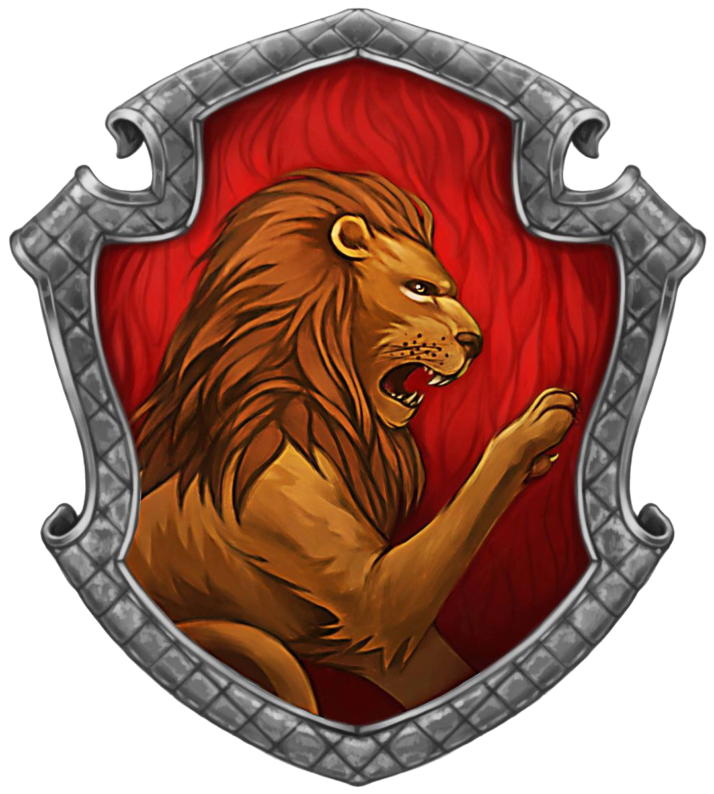
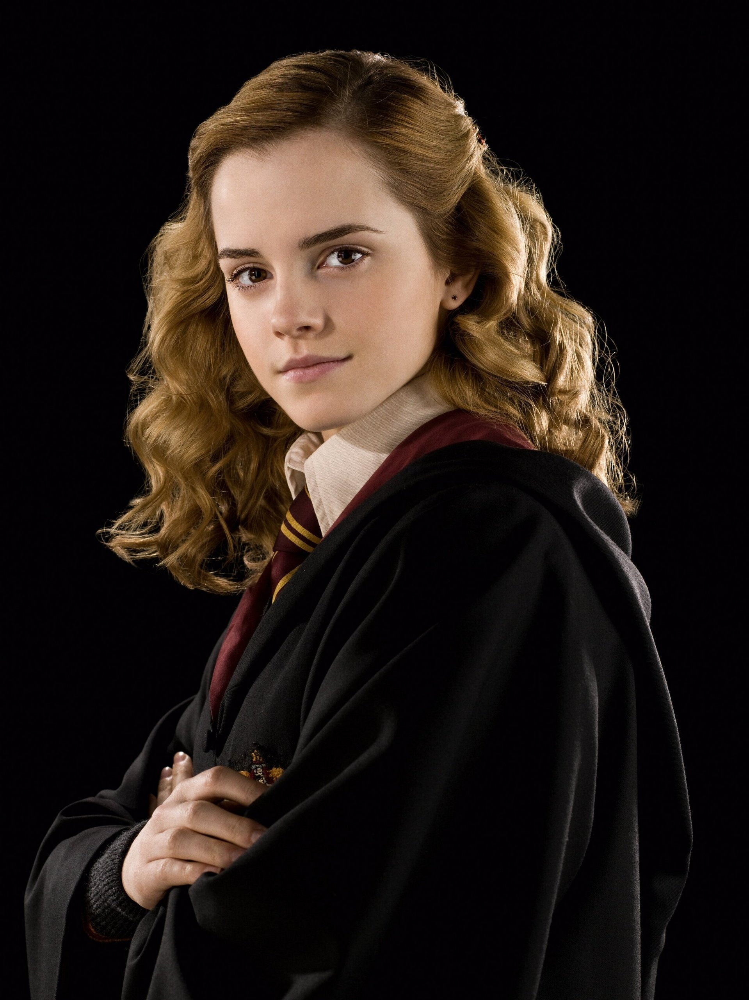

Gryffindor

 Albus Dumbledore was the headmaster of Hogwarts School of Witchcraft and Wizardry most known for being one of the best headmasters and feared by Voldemort. Dumbledore also served as Supreme Mugwump of the International Confederation of Wizards and Chief Warlock of the Wizengamot.
Albus Dumbledore 1892 - 1899
Albus Dumbledore was the headmaster of Hogwarts School of Witchcraft and Wizardry most known for being one of the best headmasters and feared by Voldemort. Dumbledore also served as Supreme Mugwump of the International Confederation of Wizards and Chief Warlock of the Wizengamot.
Albus Dumbledore 1892 - 1899
 Harry Potter is the protagonist of the main book/movie series. Both parents were killed and he was left orphaned as a baby but grew up to defeat Voldemort (or He Who Shall Not Be Named) a second time. Harry also accomplished many other notable achievements such as the Triwizard Champion.
Harry Potter 1991 - 1997
Harry Potter is the protagonist of the main book/movie series. Both parents were killed and he was left orphaned as a baby but grew up to defeat Voldemort (or He Who Shall Not Be Named) a second time. Harry also accomplished many other notable achievements such as the Triwizard Champion.
Harry Potter 1991 - 1997

Hermione Granger is a muggle-born witch who was known well for being highly intelligent and becoming friends with Harry Potter. JK Rowling (author of books) has stated that Hermione reflects her younger self, with her insecurity and fear of failure.
Hermione Granger 1991 - 1998
Gryffindor is one of the four houses founded by Godric Gryffindor. The traits associated with members of the Gryffindor house:
- Bravery
- Courage
- Nerve
- Daring
- Chivalry
Some notable members of this house are:
- Albus Dumbledore 1892 - 1899
- Harry Potter 1991 - 1997
- Neville Longbottom 1991 - 1998